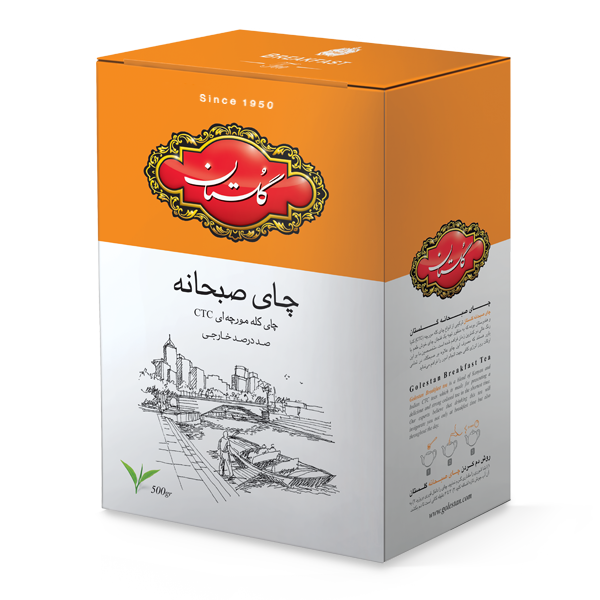
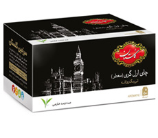
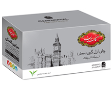
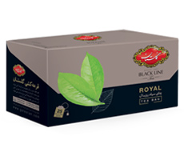
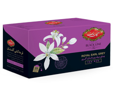
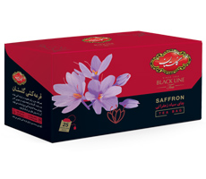
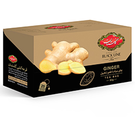

چای گلستان
سابقهای به قدمت یک عمر

معرفی محصول
چای تنها یك نوشیدنی گرم نیست. یك گفتمان است؛ گرمابخش وجود و بهانهای برای آغاز یك معاشرت دلچسب. بیدلیل نیست كه نام «محبوبترین نوشیدنی دنیا» را با خود یدك میكشد. نوشیدنش خستگیها را فراری داده، حس خوب آرامش به همراه دارد.
برای مردمان ایران زمین نام گلستان با چای پیوند خورده است؛ قدیمیترین محصول مجموعه گلستان، با مدرنترین و بهداشتیترین دستگاههای روز دنیا تهیه و بستهبندی میشود. چیزی که باعث شده مشتریانش یک عمر به نام گلستان اعتماد کنند، کیفیت، عطر و طعم به یادماندنی آن است.
شرکت گلستان با اتکا به بیش از نیم قرن سابقه در تهیه و ترکیب انواع چای، بهترین انواع چای را از مناطق برتر تولیدکننده مانند هندوستان، سیلان و کنیا خریداری نموده و آن ها را به اقتضای ذائقه ایرانی، به منظور دستیابی به بهترین عطر، طعم و رنگ با استفاده از دستگاه های مخصوص به نسبت مشخصی ترکیب می نماید و در اوزان مختلف بسته بندی و در بازار عرضه می کند












چای گلستان